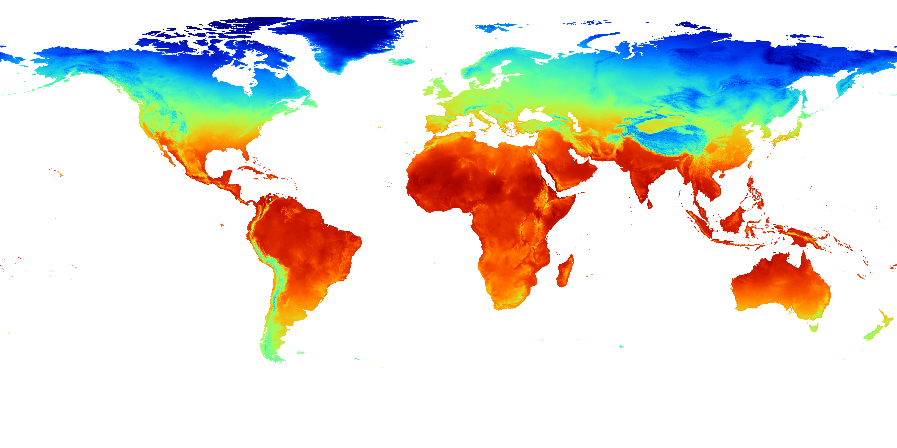

Ésta página corresponde al trabajo final del curso: Desarrollo de sistemas de información geográfica en la Web; realizada por el estudiante Marcelo Cubero Sibaja.
Sus proyectos se pueden encontrar en su página pricipal de Github.
El repositorio de este trabajo se puede acceder aquí
Para este proyecto se realizaron las siguientes páginas:
| Nombre de página | Tipo de Mapa | Fuente | Imagen |
|---|---|---|---|
| Rango Diurno Medio | Control de Opacidad | WorldClim |  |
| Casos Positivos de COVID-19 | Coropleta | Ministerio de Salud y UNED | |
| Rutas y Puntos de hidratación | Agrupados y Calor | MapMyRide |